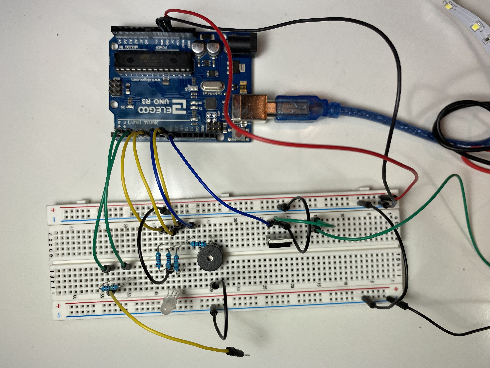

create a schematic for a circuit uses a transistor to control load power separate from logic power
implement this circuit using a breadboard
write firmware in Arduino, writing a message to the serial port
the code must use:
analogWrite()
a high-load output device
an input sensor that uses a library
Here is a gif of worm picking 🪱 🤏 circuit in action!
For my circuit, I used analogWrite() to change the brightness and colors of the RGB LED and LED strip. For the high-load output device, I used the LED strip, which I connected to an external power supply. For the input sensor,
I used an abolute touch capacitive sensor.
For this assignment, I decided to create a mini game inspired by Operation and Let's Go Fishin - and I created a pick-all-the-worms-without-picking-the-infected-worm game.
Scenario: It's Presidents' Day and you decide to go out to have fun to take a break from midterms and homework. Since it's a nice day out, you decide to go fishing, but you
realize you have no more worms left to use as bait :(. The best worms are found in the white mud. But! There's a catch: one of the worms is infected with an autoimmune disease, and
if taken out of its home, it will retaliate by letting out a war cry and spraying a bright poison. Try to grab as many worms as you can without disturbing the infected worm.
If you pick the infected worm... it'll give you a little shock so beware!
The way this game works is that the worms (aka wires) are stuck in the white mud (aka the upside down bowl). The player(s) pick the worms out of the mud. If the worm is a good worm, nothing will happen.
If the worm is the infected worm (aka the wire for the capacitive sensor), the worm will release its bright poison (LED strip will start flashing) as well as let out its war cry (buzzer sound), and the RGB LED
will flash red, signaling the end of the game.
Schematic
Schematic and calculations
for my circuit.
Since I was using red, green, and blue LEDs (in the RGB LED) for my circuit, I did two sets of calculations to determine what the appropriate
resistance to use for each LED: one for the red and green LEDs, and another set of calculations for the blue and white LEDs. For red, yellow,
and green LEDs, they all have 1.8V voltage drop, and for blue, pink, and white LEDs, they all have 3.3 voltage drop. The
desired current for all the LEDs I used was 20mA, or 0.02A (found based on the datasheets for the LEDs). When calculating the
appropriate resistance to be used in the circuit, I started with calculating the voltage across. For each of the LEDs, I decided to use 220
Ω resistors to be consistent.
Red and Green LEDs:
Knowing that the Arduino gives 5V, I calculated the voltage across as 3.2V (5V - 1.8V drop = 3.2V across). Using the known voltage across and
the desired current, I then used Ohm's Law with the equation V=IR to get a value R=160Ω for resistance. To ensure
that I did not overload the LEDs and cause them to burn out, I decided to round up and use a 220Ω resistor (shown in schematic
above calculations).
-- Blue LED: Knowing that the Arduino gives 5V, I calculated the voltage across as 1.7V
(5V - 3.3V drop = 1.7V across). Using the known voltage across and the desired current, I then used Ohm's Law with the equation
V=IR to get a value R=90Ω for resistance. To decrease the brightness of the LED, I decided to round up and use a
220Ω resistor (shown in schematic above calculations).
-- N-MOSFET Transistor: For the transistor, I connected the LED strip to it as the high-load output device. From looking at the datasheet for the transistor, the
LED strip box, and from the class lectures, I knew that the N-MOSFET transistor has a max drain current of 32A and Vdss (drain source voltage) of 60V. For the LED strips, it
contains 300 LEDs, and the LEDs are set up so that it groups 3 LEDS in series in a segment, and the segments are in parallel, so there are 100 segments in the strip. The LEDs have 3.3V drop (since they are white). For parallel
circuits, Vtotal = V1 + V2 + V3, so the total voltage drop across one segment is 3*3.3 = 9.9V. Connecting the LED strip to 12V power supply means that there is 12-9.9=1.2Vacross.
The resistor in the segment is 240ohms. Using Ohm's Law to solve for current, I=V/R=2.1V/240ohms=0.00875A. For parallel circuits, Itotal=I1+I2+...+In. Since there are 100 segments, and each
segment has the same current, so the total current for the LED strip is 0.00875*100 = 0.875A.
-- Capacitive Sensor: I didn't do any calculations for the resistor used with the capacitive sensor, but from reading through the documentation, increase
in resistor values means more sensitivity with the capacitive touch, but at a tradeoff of speed (increase in resistance increases sensitivity, but makes it slower).
Here is a list of guidelines for resistor values and approximate sensitivity:
Use a 1 megohm resistor (or less maybe) for absolute touch to activate. *
With a 10 megohm resistor the sensor will start to respond 4-6 inches away.
With a 40 megohm resistor the sensor will start to respond 12-24 inches away
* I decided to use the 1 megohm resistor as I wanted to activate the capacitive sensor with absolute touch.
Circuit
For my circuit, to make the worm picker game, I used a RGB LED, capacitive sensor, and N-MOSFET Transistor.
Top View of my Circuit (with the wires in the white mud/bowl)
Top View of my Circuit (without the wires in the bowl to show the wire for the capacitive sensor
 Top View of my Circuit (close up)
Side View of my Circuit
Arduino Code
/* A5: High(er) Voltage and Transistors
* Jocelyn Chen
* Monday 2.21.2022
*
* This program is a pick-all-the-worms-without-picking-the-infected-worm game (inspired by Operation and Let's Go Fishin games)
* This program includes a capacitive sensor, RGB LED, N-MOSFET Transistor, and LED strip.
* Some code in this program references Arduino example codes (fading the LED uses the Arduino Fade Example Code).
*/
// include library for capacitive sensor#include <CapacitiveSensor.h>
// capacitive sensor with 1 megaohm resistor between pins 4 & 2, pin 2 is sensor pin, add wireCapacitiveSensor cs_4_2 = CapacitiveSensor(4,2);
const int nt_pin = 10; // pin for n-mostfet transistorconst int buzzer = 7; // pin for passive buzzerconst int red_pin = 5; // pin for red color in RGB LEDconst int green_pin = 6; // pin for green color in RGB LEDconst int blue_pin = 9; // pin for blue color in RGB LED/// SETUP FUNCTION ///// the setup function runs once when you press reset or power the boardvoidsetup() {
Serial.begin(9600); // Initialize serial communication at 9600 bits per second:pinMode(nt_pin, OUTPUT); // Set pin for N-MOSFET transistor as OUTPUTanalogWrite(nt_pin, 0); // Set LED strip initial state to off (0)pinMode(buzzer, OUTPUT); // Set pin for buzzer set as OUTPUTpinMode(red_pin, OUTPUT); // Set pin for red color in RGB LED as OUTPUTanalogWrite(red_pin, 0); // Set RGB LED red color initial state to off (0)pinMode(green_pin, OUTPUT); // Set pin for green color in RGB LED as OUTPUTanalogWrite(green_pin, 0); // Set RGB LED green color initial state to off (0)pinMode(blue_pin, OUTPUT); // Set pin for blue color in RGB LED as OUTPUTanalogWrite(blue_pin, 0); // Set RGB LED blue color initial state to off (0)
}
/// ALARM FUNCTION ///// the alarm function sounds the buzzer and flashes the LED strip and RGB LED (red color) using fadevoid alarm() {
// fade out from max to min in increments of 3 points (with max being 100 and min being 0)for (int fadeValue = 100 ; fadeValue >= 0; fadeValue -= 3) {
// map the RGB LED fade value to the range of frequency for the buzzer to calibrate// - read in a range 0 to 100 (fade value for the LED)// - write out a range 900 to 1000 (for buzzer frequency)int frequency = map(fadeValue, 0, 100, 900, 1000);
// set buzzer with the mapped frequency valuetone(buzzer, frequency);
// set red color for RGB LED with the fade valueanalogWrite(red_pin, fadeValue);
// sets LED strip with fade valueanalogWrite(nt_pin, fadeValue);
// wait 20 msdelay(20);
}
// fade in from min to max in increments of 3 points (with max being 100 and min being 0)for (int fadeValue = 0; fadeValue <= 100; fadeValue += 3) {
// map the RGB LED fade value to the range of frequency for the buzzer to calibrate// - read in a range 0 to 100 (fade value for the LED)// - write out a range 900 to 1000 (for buzzer frequency)int frequency = map(fadeValue, 0, 100, 900, 1000);
// set buzzer with the mapped frequency valuetone(buzzer, frequency);
// set red color for RGB LED with the fade valueanalogWrite(red_pin, fadeValue);
// sets LED strip with fade valueanalogWrite(nt_pin, fadeValue);
// wait 20 msdelay(20);
}
}
/// GET READING FUNCTION ///// function to read in the capacitive sensor value as a parameter and either:// - do nothing if a normal worm was picked (reading < 1600)// - sound the alarm and fade LEDs if the infected worm was picked (reading > 1600)// 1600 was chosen as the capacitive sensor read in values from around 0-1800, so I used 1600 as the threshold valuevoid getReading(int led_in) {
// if the capacitive sensor reading is less than 1600if (led_in < 1600) {
// wait 100 msdelay(100);
// Set LED strip to off (0)analogWrite(nt_pin, 0);
// Set red color in RGB LED to 20analogWrite(red_pin, 20);
// Set green color in rgb LED to 20analogWrite(green_pin, 20);
// Set blue color in rgb LED to 20analogWrite(blue_pin, 20);
// Stop buzzer soundnoTone(buzzer);
} else { // led_in >= 1600 (capacitive sensor reading is greater than equal to 1600)for (int i = 0; i < 5; i++) {
// Set green color in rgb LED to 0analogWrite(green_pin, 0);
// Set blue color in rgb LED to 0analogWrite(blue_pin, 0);
// sound the buzzer and fade the LED strip and red color in RGB led
alarm();
}
}
}
/// LOOP FUNCTION ///// the loop function runs over and over again forevervoidloop() {
// set sensor resolution to 30long total1 = cs_4_2.capacitiveSensor(30);
// wait 100 ms (delay) to limit data to serial portdelay(100);
// get capacitive sensor reading and either:// - do nothing if a normal worm was picked (reading < 1600)// - sound the alarm if the infected worm was picked (reading >= 1600)
getReading(total1);
}
Above is a code snippet of my Arduino code. For my code, I initialized the pins for the LEDs as OUTPUTs. For the input sensor, I used the
capacitive sensor, and the capacitive touch values were used to fade the RGB LED and LED strip, as well as emit sound from the buzzer.
If the capacitive sensor value was < 1600, nothing would happen (the LED strip would stay off, and the RGB LED would stay at its
starting color and brightness. Else (capacitive sensor value was >= 1600), the LED strip and red color in the RGB LED would fade to a
fade value, and the buzzer would emit sound to a mapped frequency based on the fade value.
View the arduino code
here!
Video of the choosing the LED color using the photoresistor, and fading the RGB LED to the chosen color using the capacitive sensor. *WARNING* Loud buzzer noise and flashing lights *WARNING*